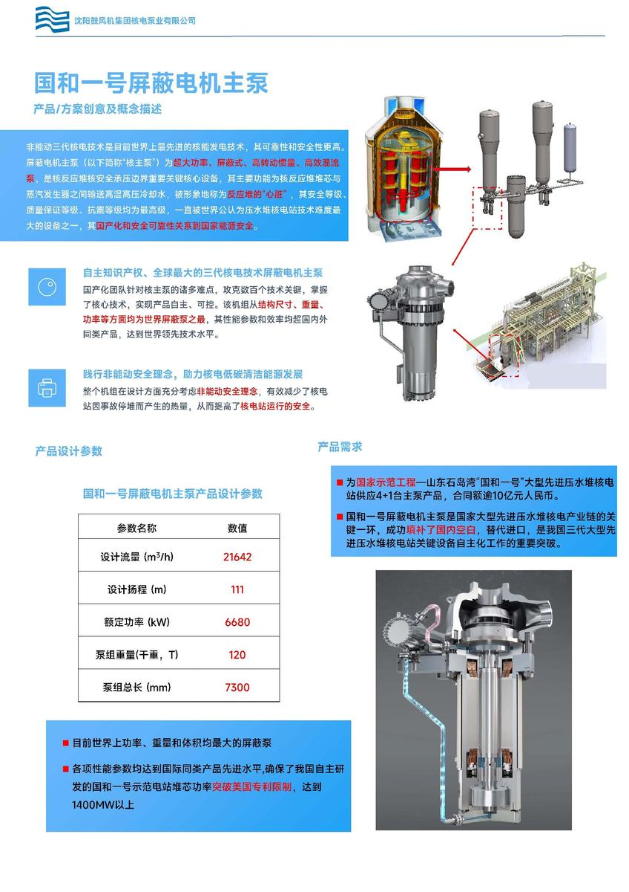
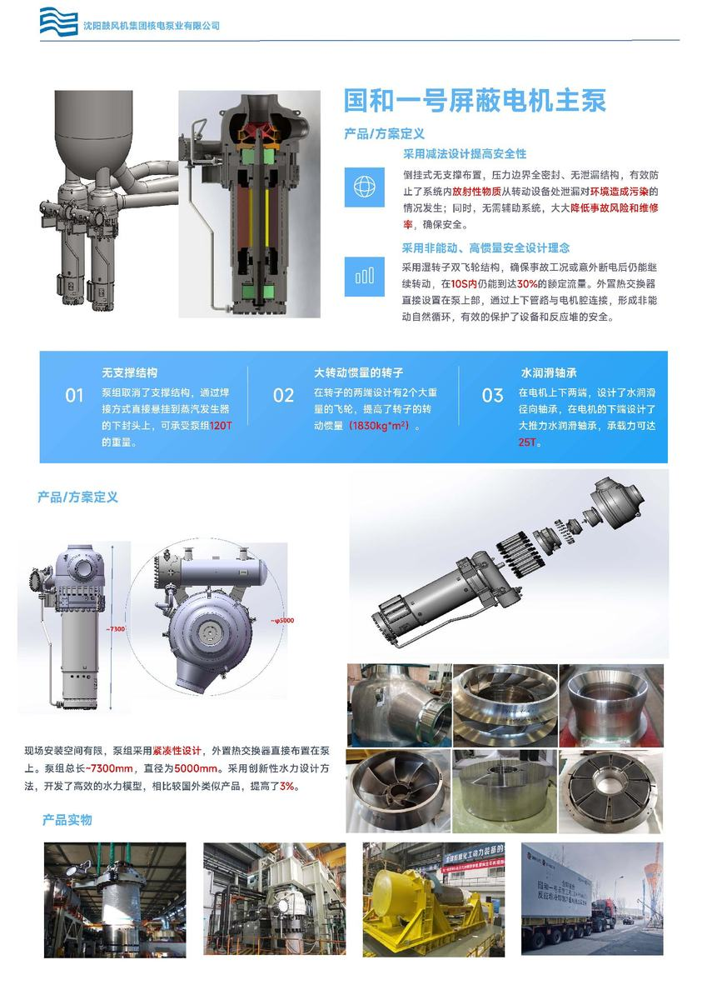
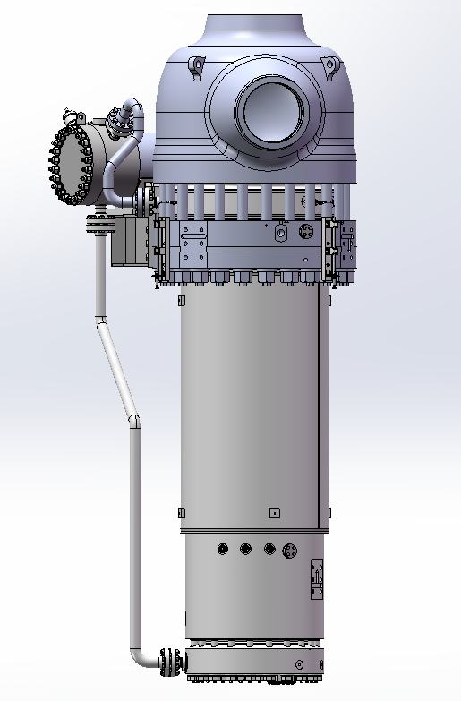

核主泵是反应堆压力边界内的唯一能动设备，被喻为核电站的“心脏”，其安全等级、质量保证等级、抗震等级均为最高级，技术难度大，可靠性要求高，一直被世界公认为压水堆核电站技术难度最大的设备之一，其国产化和安全可靠性关系到国家能源安全。
为发展中国自主核电技术品牌，摆脱对核主泵的进口依赖。在国家科技部、国家能源局和国家电力投资集团的安排下，2013年沈鼓集团承担了大型先进压水堆核电站重大专项课题“CAP1400屏蔽电机主泵研制”（课题编号：2013ZX06002-002）。以国和一号示范工程为依托，研发具有自主知识产权、全球最大的三代核电技术屏蔽电机主泵。技术团队攻克了水力设计、安全分析、应力计算、转子动态分析等百余项技术关键，实现了设计技术、分析技术、加工技术、试验技术、研发流程及文件体系的五大创新，该机组从结构尺寸、重量、功率等方面均为世界屏蔽泵之最。2021年7月31日，经中国机械工业联合会组织鉴定，叶奇蓁、郭东明、刘正东院士等专家团队的鉴定意见为“……设计理念先进、结构合理、选材适当、制造工艺优良……具有自主知识产权，系国际同类最大规格屏蔽电机主泵，主要技术指标达到国际先进水平，可以用于国和一号示范工程及后续核电项目”。2022年12月，国和一号屏蔽电机主泵产品通过了国家能源局组织的出厂验收并顺利发运，并于2023年进入国家能源局“第三批能源领域首台（套）重大技术装备名单”。
该项目成果获省部级奖励8项，授权发明专利9项，实用新型专利6项。关键技术已推广应用于“国和二号”50Hz屏蔽电机主泵、“华龙一号”轴封型主泵等项目中，创造的直接经济效益近十亿元，根据我国的核电发展规划，预计未来每年可实现新增销售收入数十亿元。
国和一号屏蔽电机主泵的自主化设计制造，实现了屏蔽式核主泵产品国产化从无到有、从小到大的突破，解决了我国核电市场长期以来依赖进口的局面，促进了国内核一级承压边界材料等高端材料行业的技术发展，提高了国内核电装的备制造技术水平和能力，使我国核主泵研制水平跻身于世界前列。
在“碳中和”、“碳达峰”背景下，核能已成为我国能源转型的主流方向之一。作为国际上最广泛采用的商用核电堆型，压水堆核电技术在我国得到广泛应用。然而，我国在役和在建压水堆核电机组核主泵完全依赖于国外技术，核主泵的核心技术被国外长期垄断，成为我国核电自主化的“卡脖子”问题。
大功率屏蔽主泵是第三代大型先进非能动压水堆核电站的关键设备之一，也是该堆型中技术难度最大的设备。沈鼓集团自2013年，以承担国家重大专项为契机，以企业及产学研融合科研创新平台自我研发为主，先后攻克核一级原材料国产化、关键零部件制造、转子动平衡、试验台架优化设计等关键制造技术，以及水力模型开发、结构设计、抗震响应分析、安全分析、转子动态分析等关键设计技术，夯实了大型屏蔽主泵的技术基础，形成了成套的屏蔽主泵研发和产业化体系，成功研发具有自主知识产权的CAP1400屏蔽主泵，整机机械性能指标及能耗指标均优于国外同类泵组。
图1 国和一号屏蔽电机主泵产品尺寸示意图
创新点1：设计技术创新
采用非能动设计理念，研制了悬挂式布置结构的大尺寸屏蔽电机主泵（国和一号），定子主法兰外径2.2米，高7.3米，干重120吨，机组热态效率达57.9%，是目前世界上最大的屏蔽泵，其重量、外形尺寸、功率均为世界之最。采用非能动设计理念，整个转子浸泡在输送介质中，采用双飞轮设计，提供足够的惰转惯量，确保主泵在现场事故工况或意外断电后仍能继续转动，在10s内仍能到达30%的额定流量，将堆芯衰变热量带走，保证反应堆安全停堆，从而在确保核反应堆安全可控。结构上取消了泵与电机之间的机械密封，法兰处静密封采用特殊结构的C型密封环，通过密封焊将泵体与电机大法兰以及电机下法兰和电机端盖之间进行连接，使泵组的压力边界构成了全密封、无泄漏结构，有效防止了系统内放射性物质从转动设备处泄漏对环境造成污染的情况发生；泵组采用倒挂式无支撑布置，将主泵进口与蒸汽发生器下封头直接焊接，简化了泵组结构的同时确保非能动功能，使得轴承及绕组部分始终处在低温环境，有效的保护了电机的安全。通过非能动理念设计方法，解决了屏蔽主泵总体结构及外形尺寸的严苛要求，实现电机与泵一体式结构开发设计。实现了大型屏蔽电机泵的技术跨越，功率参数和服务的反应堆机均属世界之最，技术水平属于世界领先。
图2 国和一号屏蔽电机主泵产品内部结构示意图
运用传统的模型相似换算、参数化拟合与自动优化设计等方法，建立过流部件的结构形状与性能间的映射关系，发展多元约束下面向水力性能的高效水力模型设计方法，获得核主泵含导叶的准球形特殊压水室结构的最佳设计参数及匹配原则，通过叶轮和导叶子午型线及叶型的参数化拟合，兼顾叶轮的高效及轴向力，提高了水力模型开发的效率。获授权实用新型专利1项：ZL201220734082.9。
实现了满足60年寿命的电磁方案控制及其特性分析：基于电磁路的理论模型完成了二维电磁参数分析，提出了快速精确定计算电磁及在各工况参数下的计算方法，实现了电磁多元化分析计算。提出了定子齿多段分布计算磁密的计算模型，提高了方案计算精度。研究了转子屏蔽套的谐波损耗精确定计算方法，实现转子屏蔽套的损耗精确定计算。建立了绕线端部漏磁计算模型，完成定子齿压板环流控制及损耗分布计算。优化了气隙磁密的控制，实现的定子屏蔽套损耗控制及电机效率控制。满足主泵电机总体效率及输入功率控制。
基于流体动压理论，发明了一套在水润滑条件下的自平衡支撑系统的双向推力轴承系统及带预载的可倾式轴向轴承系统，建立了一套轴承设计、试验及评估系统。解决了立悬式高惯量轴系的支撑和柔性冲击稳定运行要求。设计了推力瓦平衡块支撑梁结构，解决了推力瓦均载受力及偏转润滑的的需求。开发了推力瓦冠面润滑技术，解决了主泵启动及低转速下流体润滑不足技术难题。发明了轴承系统中主承载和副承载联接关节线性支撑运行配合结构，解决了主泵运行时的支撑润滑及磨损要求。发明了瓦基背部隔热控制结构，解决了主泵LOCA事故对轴承的热冲击效应。实现轴承系统60年设计寿命的指标，并通过工程及耐久性试验考核。
创新点2：分析技术创新
首次基于ANSYS软件环境实现针对主泵压力边界完整性分析的全过程应用；基于ANSYS软件进行压力边界的等效二维和三维有限元建模，完成考虑稳态/瞬态温度载荷条件的传热过程分析，并进一步开展热-固耦合的结构应力与变形分析，基于数值分析结果完成一次/二次应力评定与疲劳校核；首次开展基于大型通用有限元分析软件的压力边界部件的力学分析体系搭建和专用工具的定制化开发，技术水平达到国际先进。
图3 压力边界2D整体及热屏区温度场 图4 压力边界3D整体温度场
首次基于ANSYS软件环境对主泵开展地震响应动力学分析。通过分析对比和模型修正，形成基于ANSYS软件的主泵一体化动力建模分析技术。基于ANSYS软件开发的主泵动力学分析专用软件，可以实现主泵动力学模型的快速搭建，部件间耦合行为的精准模拟，不同地基刚度下地震时程的调试，以及载荷数据批处理、报告自动生成等功能，能够有效提高设计分析人员的工作效率，缩短产品分析周期，提高产品的技术竞争力，技术水平达到国际先进。
图5 主泵地震响应模型及分析结果
首次针对主泵叶轮完成基于流固耦合的干湿模态识别、动力响应分析和高周疲劳评定。考虑叶轮表面特别是叶片表面流体的附加质量对叶轮模态的影响，得到叶轮的湿模态；通过流固耦合方法，考虑叶轮浸没状态下因动静干涉而受到的流场压力载荷激励作用，完成瞬态动力学分析，进而评估叶轮的高周疲劳特性，确保叶轮长期使用安全，该项分析技术水平达到国际先进。
基于转子动力学微分方程，建立了浸湿转子动力特性PHYTRI轴对称单元模型，完成大惯量飞轮陀螺效应分析。首次揭示了窄间隙环域刚度原理，在分析过程中加入了转子偏转值（TIR）等特殊参数，完成了全频段的转子模态分析，实现了隔离裕度大于15%，最终控制了主泵机组振动值在127微米以内，实测样机测量振动幅值在30微米左右。
创新点3：加工技术创新
为解决多刃螺纹铣刀切削力大，并存在接刀痕或过切现象，技术人员在数控程序上进行优化，经过多次试验验证，发明连续铣削螺纹的数控加工程序，采用此数控程序可以使切削阻力最小化，加工效率最大化，无接刀痕或过切现象，能够更好的保证主泵的生产质量，增加产品的可靠性和安全性。获授权发明专利1项：ZL201610784835.X。
主螺纹的螺纹孔扣头为保证装配的稳定性，首螺纹的1/4要求去除，常规均采用手工打磨方法，其缺点为手工操作不安全因素大，很容易对相邻螺纹造成损伤。课题组对其技术攻关，开发出在数控镗铣中心去除不合螺纹的铣削方式，大大的提高的产品的加工质量，节省工人的劳动强度，增加制造的稳定性，此种方法获授权发明专利2项：ZL201611069817.X和ZL201610784835.X。
为了解决因高压压板密封效果不好的难题，课题组研制开发了一种新型的水压试验方法，在进行水压试验时，依靠自身内力形成密封系统，无需很大外力就可达到理想的密封效果。其优点为：由内力造成自身的紧固力；由内力造成自身的密封力；不须要外力做功，确保试压质量；水压强度越大，其自身密封效果越显著。采用此种方法进行水压试验操作简便，安全性高，可靠性高。
采用航插方式实现泵壳内部应变片防水测量及导线穿壁，首次实现应用应力应变参数测量进行水压试验，可实现60MPa、0.5级的测量精度，并与模拟计算进行验证，为主泵的安全设计提供测量数据验证，以保证泵壳设计的可靠性和安全性。
针对CAP1400屏蔽主泵紧固件镀铬和磷化质量的高要求，与表面处理厂家和院校共同攻关，课题组研究比对不同表面处理工艺下镀铬层&磷化层的宏观质量、微观结构、与母材结合力和耐腐蚀性，从而形成一套屏蔽主泵用紧固件表面处理工艺评价体系及方法，培养出可提供满足屏蔽主泵要求的镀铬和磷化处理厂家，为CAP1400屏蔽电机主泵紧固件表面处理提供了保障。获授权发明专利1项：ZL201310738256.8。
创新点4：试验技术创新
根据国和一号核电厂热工水力设计、事故安全分析结果对屏蔽电机主泵的技术要求，确定了开展20项样机试验项目和试验条件，涵盖了高温、高压和全流量的试验范围。通过开展试验台总体试验参数需求与技术方案的研究，创新性的设计了CAP1400高温高压全流量屏蔽电机主泵试验台，保证平台安全平稳的运行特性和良好的测试精度，通过开展试验台测试误差分析，为测量设备误差分配、测试数据的分析提供技术支撑，确保试验台满足测试精度要求。同时，采用理论分析和试验研究相结合的技术路线，开展了整流栅等重要部件的结构优化，保证试验台的测试精度分析，满足试验平台后续的兼容性需求，为台架的后续拓展应用奠定一定基础。
图6 CAP1400核主泵试验台
CAP1400屏蔽电机主泵出口流场三维PIV试验中，将主泵模型的出口和入口管路改造为可视化结构，并在回路上布置三维PIV测试系统，建立了三维PIV可视化试验回路系统。通过该系统对主泵最终模型的出口流场进行三维可视化测量，包括正冲水泵、制动、飞逸、堵转工况以及反冲反转、正转、飞逸工况共计52个工况，得到各特殊运行条件下的流场形态特征。通过本试验获得的流场测量图像清晰，流场形态合理，真实直观地展示了泵内部流场形态。利用NUMECA进行主泵模型与试验工况相对应的数值计算，通过试验测得的整泵性能趋势和泵内流场速度分布特性均与数值计算结果良好吻合，验证了数值模拟方法的准确性与和合理性，为水力模型的开发和优化提供试验依据。
为了获得精准的水力模型轴向力，开发了测试范围宽、线性度好的轴向力测试装置。在该装置测力环结构设计时将轴向力的测试范围设计为15000N。测力环的轴向长度26mm，外径尺寸215mm。弹性元件材料选用45钢。由于泵的轴向力检测要设计成环形弹性元件，考虑3点的良好支撑性和受力的均匀性，在环的2个平面上各均布3个支撑点（相对小的平面），且2个面的支撑点相互交错。为了更加精准的测量，掌握测力弹性元件的特性，将弹性元件在CSS-55100型电子万能试验机上进行静态标定。整个测试系统满度误差小于1%。测试分辨力为1N。获授权发明专利1项：ZL201511004634.5，实用新型专利2项：ZL201521105490.8和ZL201620162566.9。
研究时需要为模型泵依据不同试验项目配置不同性能参数的供压泵，由于供压泵的流量及压力比较大，试验时易产生波动，影响测量精度，为提高测量准确性，回路设计时，在主泵入口增加设计整流栅装置，在每一测量截面处的管壁上设置4个取静压孔，并形成环形取压腔，使测量值轴对称、等静压，无旋涡，保证测量的稳定可靠准确。流量测量管段设计时除了按流量计的标准要求设计稳流前后直管段，还在流量计入口稳流直管段前设计了稳压罐，罐最高点设备放气阀，不但稳定了流量而且通过流量测量管段前后两个罐的高度，保证了流量测量回路内充满液体，使流量测量更加准使测量。
创新点5：研发流程及文件体系创新
国和一号屏蔽电机主泵供电频率为50Hz，设计流量大幅提升（较 AP1000 高 21%），是全球最大功率的屏蔽主泵，要求为立式、无轴封、全密封结构、60年设计寿命等；其设计需要综合考虑水力性能、水力载荷、泵体结构、密封方式、冷却、轴承载荷以及制造工艺、材料制造等诸多关联因素，结构设计难度极大。本项目以系统工程理论为基础，结合企业自身在核电用泵方面的设计制造经验以及国和一号屏蔽电机主泵研发实际情况，依据相关法规、标准，建立了涵盖全生命周期、全业务域、全层级的核主泵研发流程，按照突出重点、分步实施的原则，逐步形成具有自主知识产权的大功率屏蔽主泵研发流程及文件体系（，涵盖设计、制造及试验，支撑了后续屏蔽主泵研发的顺利进行。
图7 全生命周期、全业务域、全层级的核主泵研发流程及文件体系



世界最大屏蔽泵(干重 120 吨、热态效率 57.9%),60 年设计寿命,整机性能优于国外同类
工程装备,全密封一体式结构,形式完全服从安全功能
核安全即公众安全:断电 10 秒内维持 30% 流量带走堆芯余热,「非能动」保命设计
打破核主泵长期国外垄断,带动核一级材料与零部件国产化产业链
「国和一号」核电自主化的关键装备,大国重器叙事的重要组成部分